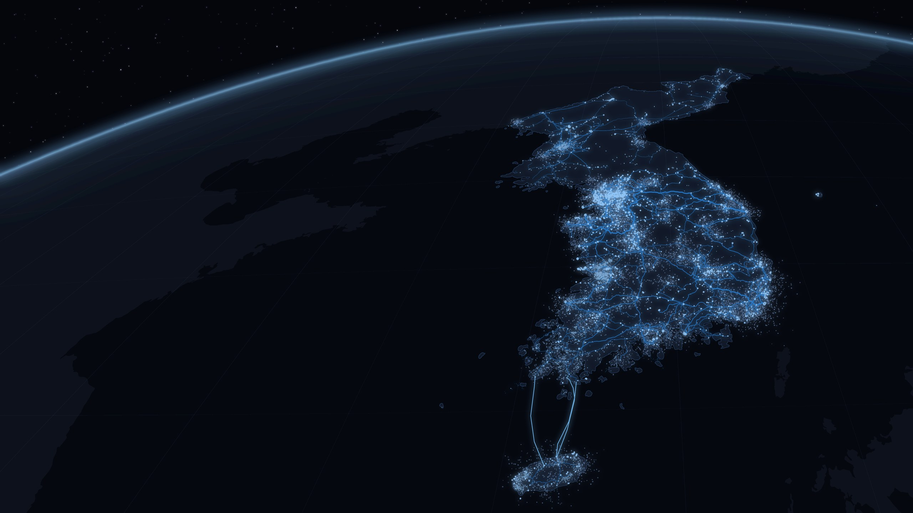
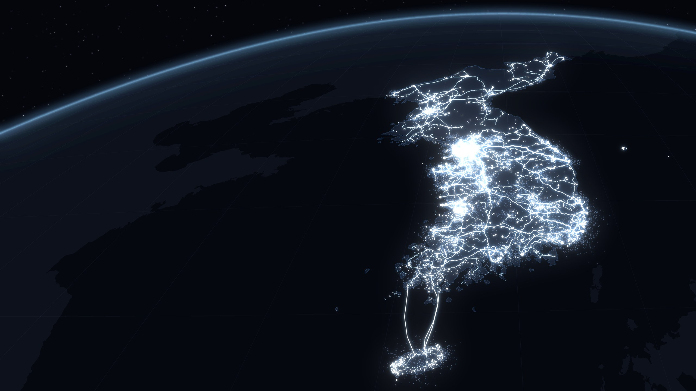
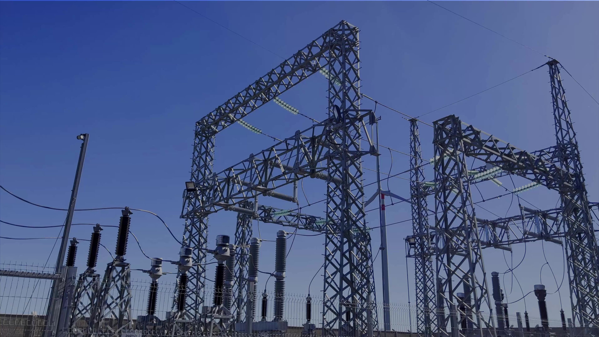
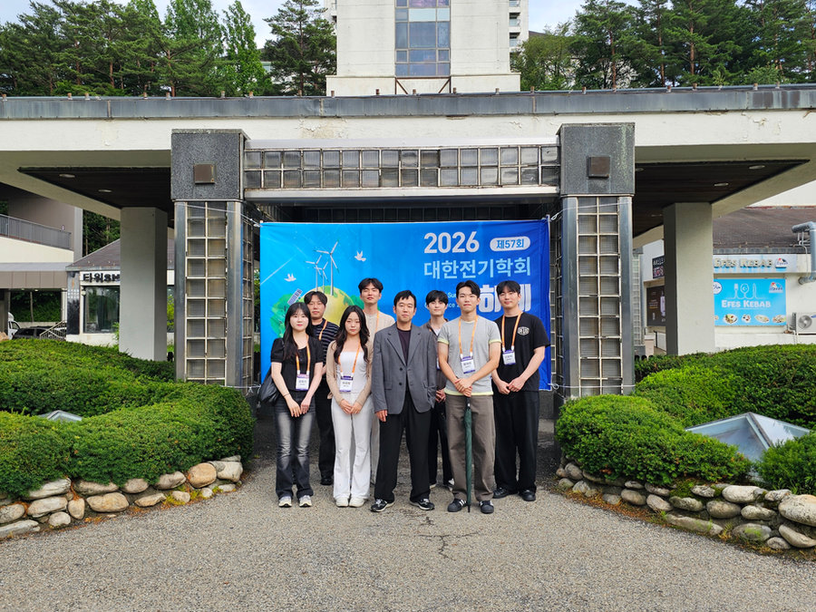

Energy System
Prognostics &
Diagnostics Lab
중앙대학교 에너지시스템
예지 & 진단 연구실School of Energy Systems Engineering, Chung-Ang University
전력 인프라의 고장을 정전 없이 찾아내는 진단 기술을 연구합니다.We develop diagnostic technologies for power infrastructure.
Grid data © OpenStreetMap contributors
구성원 모집Join Us
박사후연구원, 석·박사과정 대학원생, 학부 연구생을 모집합니다.We are recruiting postdoctoral researchers, M.S./Ph.D. students and undergraduate researchers.
연구 분야Research
정전 없이 신호를 주입해 전력 케이블의 고장 위치를 실시간으로 찾습니다.Real-time detection of fault locations in power cables through signal injection without power outages.

소식News & Gallery
수상, 학회 참가, 현장 실험 소식을 전합니다.Awards, conferences and field experiments from the lab.
